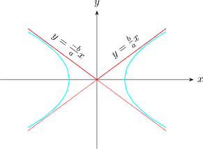
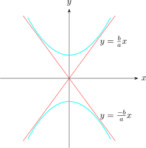
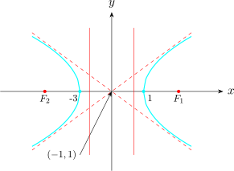

1.7 Asymptotes of a Hyperbola
When \(x\) and \(y\) both become very large the equation \[\frac {x^2}{a^2} - \frac {y^2}{b^2} = 1\hspace {0.5cm}\text {approximately} \hspace {0.5cm} \frac {x^2}{a^2}- \frac {y^2}{b^2} = 0\]
\[\Bigg (\dfrac {x}{a} - \dfrac {y}{b}\Bigg )\Bigg (\dfrac {x}{a} + \dfrac {y}{b}\Bigg ) =0\]
Thus, the equations \(\displaystyle {\dfrac {x}{a} - \dfrac {y}{b} = 0}\) and \(\displaystyle {\dfrac {x}{a} + \dfrac {y}{b} = 0}\) are the asymptotes of a hyperbola.

The equations of the asympototes of a hyperbola \[\frac {x^2}{49} - \frac {y^2}{36} = 1\] are \(y = \dfrac {6}{7}x\) and \(y = -\dfrac {6}{7}x\).
Similarly, the equations of the assymptotes of the hyperbola \[\frac {y^2}{a^2} -\frac {x^2}{b^2} = 1\] are given by \(y = \pm \dfrac {a}{b}x\).

Solution. \begin {align*} 25y^2 - 150y - x^2 - 16x + 109 & = 0\\ 25(y^2 - 6y) - (x^2 + 16x) + 109 & = 0\\ 25(y^2 - 6y + (3)^2) - (x^2 + 16x + (8)^2) & = -109 + 9 +64\\ 25(y-3)^2 - (x+8)^2 & = -109 + 9 + 64\\ \end {align*}
\[\dfrac {25(y - 3)^2}{100} - \dfrac {(x + 8)^2}{100} = \frac {100}{100}\]
\[\implies \hspace {0.5cm} \frac {(y - 3)^2}{4} - \frac {(x + 8)^2}{100} = 1\]
We let \(X = x + 8\) and \(Y = y -3\), then the equation becomes \[\dfrac {Y^2}{4} - \dfrac {X^2}{100} = 1\] Which is a standard equation of a hyperbola whose foci lies on the \(y-\)axis.
In \(X-Y\) coordinate system the origin is \((0,0)\), the vertices are \((0,\pm 2)\), the foci are \((0,\pm \sqrt {104})\).
\[e = \frac {c}{a} = \frac {\sqrt {104}}{2}\]
\[a = \frac {2\sqrt {13}}{5}\hspace {1cm} b = 2\sqrt {13}\]
\[c = \sqrt {\dfrac {52}{25} + 52} = \dfrac {2\sqrt {338}}{5}\]
Foci: \(\hspace {0.2cm} \Bigg (0, \pm \dfrac {2\sqrt {338}}{5}\Bigg )\hspace {0.5cm}\) and \(\hspace {0.5cm}\) Vertices: \(\hspace {0.2cm} \Bigg ( 0, \pm \dfrac {2\sqrt {13}}{5}\Bigg )\)
\[e = \frac {c}{a} = \frac {2\sqrt {338}}{\dfrac {2\sqrt {13}}{5}\times 5} = \frac {\sqrt {338}}{\sqrt {13}} > 1 \]
The assymptotes are \(Y = \pm \dfrac {a}{b}X\) is \[Y = \pm \frac {\dfrac {2\sqrt {13}}{5}}{2\sqrt {13}}X\hspace {0.5cm} \implies \hspace {0.5cm} Y = \pm \frac {1}{5}X\]
The directrices are \(Y = \pm \dfrac {a}{c}\) is \[Y = \pm \frac {\dfrac {2\sqrt {13}}{5}}{\dfrac {\sqrt {338}}{\sqrt {13}}}\hspace {0.5cm} \text {i.e}\hspace {0.5cm} Y = \pm \dfrac {26}{5\sqrt {338}}\]
Solution. \begin {align*} x^2 + 2x - 4(y^2 - 2y) & = 7\\ (x + 1)^2 - 4(y-1)^2 & = 7 + 1 - 4\\ \frac {(x+ 1)^2}{4} - \frac {4(y - 1)^2}{4} & = \frac {4}{4}\\\\ \frac {(x + 1)^2}{4} - \frac {(y - 1)^2}{1} & = 1\\ \end {align*}
Let \(X = x + 1\) and \( Y = y -1\). Then the equation becomes \[\frac {X^2}{4}-Y^2 = 1\] Which is a standard equation of a hyperbola whose foci and vertices lie on the \(x-\)axis.
In the new coordinate system
- \(\hspace {0.5cm}\) Origin (0,0)
- \(\hspace {0.5cm}\) Vertices: \( a=2\hspace {0.3cm}\), \((-2,0)\) and \((2,0)\)
- \(\hspace {0.5cm}\) Foci: \(\hspace {0.2cm} c = \sqrt {b^2 + a^2} = \sqrt {4 + 1} = \sqrt {5}\). Hence \(\hspace {0.2cm} (-\sqrt {5}, 0)\) and \((\sqrt {5},0)\).
- \(\hspace {0.5cm}\) Directrices: \(\hspace {0.2cm} e =\dfrac {c}{a} =\dfrac {\sqrt {5}}{2}> 1\). Thus \(\hspace {0.2cm} X = \pm \dfrac {4}{\sqrt {5}}\).
- \(\hspace {0.5cm}\) ASymptotes: \(\hspace {0.2cm} Y = \pm \dfrac {b}{a}X\hspace {0.3cm} \implies \hspace {0.3cm} Y = \pm \dfrac {1}{2}X\)
In the original coordinate system
- Centre: \(\hspace {0.3cm} (-1,1)\)
- Vertices: \(\hspace {0.3cm} (-3,1)\) and \((1,1)\)
- Foci: \(\hspace {0.3cm} (\sqrt {5} -1, 1)\) and \((-\sqrt {5}-1, 1)\)
- Directrices: \(\hspace {0.3cm} x + 1 = \pm \dfrac {4}{\sqrt {5}}\)
- Asymptotes: \(\hspace {0.3cm} y - 1 = \pm \dfrac {1}{2} (x + 1)\)

Questions on this section
Stuck on something here? Ask below and it stays attached to this topic.